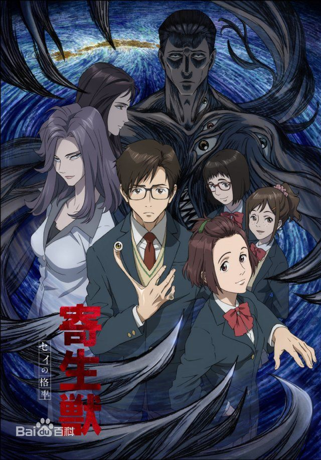

寄生兽生命的准则
《寄生兽 生命的准则》是根据日本漫画家岩明均创作的漫画《寄生兽》改编而成的电视动画，于2013年11月宣布电视动画化[1] ，作品主要描写了平凡的高中生泉新一和寄生在他体内、与其右手同化的生物“右”共存的坎坷命运
动画由MADHOUSE制作，于2014年10月8日在日本电视台首播，预定全24话。
故事简介
某天于地球上空出现许多孢子，其中诞生的幼虫侵入身体后，以寄生脑部为目标，寄生完成后与脑部细胞同化，管理这个“死掉的身体”。它们能任意变形，其食物便是寄生体相同的物种。
由于寄生生物的出现，到处频传残忍的杀人事件，但人类却淡漠地忽视这种仍属少数的案件，而寄生生物逐渐了解人类世界，学会开始计划组织并利用政治的力量，使世界陷入恐慌中。
泉新一，普通的高中生，但他却是被寄生生物寄生的人类之一，但是由于某种意外，寄生在他体内的生物并没有吃掉他的大脑，而只是取代了他的右手。本性善良正直的泉新一没有被这突如其来的残酷命运击倒，为了被寄生生物杀死的亲友以及所有人类的未来，他决心与其他完全体寄生兽进行殊死搏斗。
分集剧情
第01话 变身
某天地球出现许多孢子，其中诞生的幼虫侵入人体后，通过吞噬掉宿主的头部管理这个“死掉的身体”，它们能任意变形，其食物便是与寄生体相同的物种。泉新一就是被寄生的人类之一，但是由于某种意外，寄生在他体内的生物并没有吃掉他的大脑，而只是取代了他的右手。面对这突如其来的状况，新一陷入恐惧之中……
第02话 肉体的恶魔
新一终于明白了自己的立场，决定与寄生在他体内的生物和平相处，并给它取名叫“右”。寄生兽逐渐渗透到人类世界中，现在到处频传着残忍的杀人碎尸事件，新一决心使用小右的力量，与其他完全体寄生兽进行殊死搏斗。里美是新一的同伴同学，两人互相喜欢，里美敏锐察觉到新一的变化，但是她什么都没说。
第03话 飨宴
杀人碎尸事件已经多到让人麻木，新一是唯一知道真相的人类。新一发现学校里潜伏着寄生兽，而这个名叫田宫良子的寄生兽竟然以老师的身份公然出现，田宫同样发现了新一的寄生兽体质。新一与田宫交谈后，发现田宫并无战意，但她的伴侣A先生视新一为眼中钉。A先生独闯学校，四处寻找新一的踪迹，想要杀死他。
第04话 乱发
新一在小右的掩护下重伤了A先生，A先生想要移居到田宫的身体，却被田宫制造的爆炸杀害。怀孕的田宫决定抛弃“田宫良子”的身份，杀掉学校所有人，新一也险些遇害。小右能从新一身上脱离一段时间，这让新一很吃惊。新一的妈妈发现了他的异常，但是新一无法对父母说出自己身体的秘密……
第05话 异邦人
新一发现自己的大脑与小右逐渐融合，这让他莫名恐慌。新一无意间看到长井被人群殴，他上前劝架却被对方毒打。关键时刻，神秘少女加奈出言制止，她发现了新一的异常，开始对新一展开调查。在另一边，新一的母亲被急需更换肉体的寄生兽杀害，并占据了肉体，父亲受重伤生死不明。
第06话 太阳照常升起
新一被寄生后的母亲刺穿心脏，小右将自己与新一的心脏合体化，把新一从鬼门关拉了回来。重生后新一的身体被改造，拥有超越人体的机能，然而小右与新一融合后每天要完全睡眠四小时，成为了致命的弱点。新一前去看望父亲，父亲对新一撒谎说母亲行踪不明，不过新一早已知道事情真相，他发誓要报丧母之仇……
第7集 暗夜行路
感知到了寄生兽，于是新一来到了堤坝边，并遇到了另一个被寄生但仍然保留着人类大脑的宿主宇田守。新一将事情的始末跟宇田沟通之后，宇田决定帮助新一。宇田帮助他找到了寄生在新一妈妈身上的寄生兽，但却反被其跟踪并刺穿胸口，此时新一赶到，终于要面对杀母仇人了……
第8集 冰点
事件结束之后，新一回到了学校。光男因为加奈的缘故想收拾新一但却被打败。里美发觉了新一的变化，不断询问新一是否真的是泉新一。加奈发现自己拥有感知新一的能力，但实际上却是感知寄生兽的能力而她自己并不知道。班里新转来一位转学生岛田秀雄，实际上却是寄生兽，是田宫良子派来观察新一的。
第9集 善恶的彼岸
岛田秀雄观察新一时，无意中发现了一天内某些时刻小右的反应极其微弱。裕子因为对岛田秀雄抱有好感，因此暗中观察，却无意中发现岛田秀雄的脸是假的，并由此明白岛田秀雄的身份。她约岛田秀雄来美术室，要求他离开学校并不要杀人，岛田秀雄认为自己暴露了，于是露出了真面目……
第10集 发狂的宇宙
裕子情急之下将准备好的硫酸扔向岛田，使其身体遭到腐蚀意识不统一，为了逃生她从楼上跳下，所幸身体并无大碍。岛田陷入狂乱，四处虐杀老师及学生，老师们组织学生撤离，但里美所在的班级仍被困学校。新一潜入学校，看到遍地尸体的他内心产生了动摇。冷静过后，新一顺利救出里美，并用石头贯穿了岛田的心脏，杀死了他。
加奈梦到自己遭怪物围困之时，被骑士新一所救，因此更加断定新一是自己的“命运之人”。加奈看到有关岛田的新闻，对新一的身份有所怀疑，她拔下新一的头发并保存起来。在另一边，神秘组织的寄生兽只身闯入流氓窝点，疯狂虐杀成员，只为测试杀人能力，而这个组织的寄生兽老大竟然要竞选市长……
第12集心
加奈错以为自己能够感应新一，对新一的屡次劝告置之不理。新一不得已向加奈坦白寄生兽的事，但加奈不肯相信。新一决定让右现出原形。约定当日，加奈将其他寄生兽错当成新一而遭到攻击，死在新一的怀里。